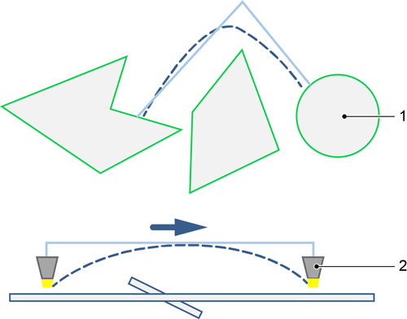

Smart Collision Prevention
Smart Collision Prevention is an NC post-processing program for 2D laser machines.
The program optimizes the generated NC file in a way that avoids collisions between tilting parts and the cutting head as much as possible. Smart Collision Prevention changes the execution sequence to prevent collisions. Microjoints or nanojoints are only used if a collision cannot be prevented using other measures.
|
If an NC file is to be optimized with Smart Collision Prevention:
-
When creating and adapting the processing, note the programming instructions and the operating principle of Smart Collision Prevention.
-
The following can be set in the parameters:
-
Whether Smart Collision Prevention should retain microjoints
-
Whether scraps should be cut up
-
Whether all microjoints should be replaced by nanojoints
-
Use Smart Collision Prevention to generate an NC file with two NC programs. Both NC programs are displayed on the machine. The optimized NC program is encrypted.
The original NC program is marked with an _ at the end of the file name.
Method of operation
Smart Collision Prevention calculates the possible collision space for each contour. Using various execution strategies, an order is determined for contour processing which avoids collisions as much as possible.
The following execution strategies are used, amongst others:
-
Contours which may tip are not cut free if they cannot collide with the cutting head. Contours are split where necessary.
-
Individual inner contours are cut up where necessary.
-
Where necessary, individual inner or outer contours are secured with microjoints or nanojoints. Microjoints or nanojoints are always set to the approach position of the original NC file. The position of the microjoints or nanojoints can be determined during programming by moving the approach flag.
-
Positioning trips can be executed over and around a cut-free contour.
-
Positioning trips are executed with maximum economy of time:
-
With positioning trips around a contour that has been cut free, a square cutting head movement path that has arisen due to a change of direction will be rounded.
-
With positioning trips around a contour that has been cut free, the maximum height of the tilted part is calculated and the crossing height adapted accordingly. This will avoid unnecessary upward motion of the cutting head. In addition the cutting head is moved in an arched motion (synchronous to the axis) over the contour that has been cut free.
-
-
Cutting glass is switched off automatically when over-traversing.
| The functions Cut scrap or Set microjoint in TecZone Cut are only used if the function is required to avoid a collision. The same contours can therefore be treated differently. |
Example

Programming instructions
For Smart Collision Prevention it is usually sufficient to create processing operations automatically.
Sheet cuts can be programmed normally. Sheet cuts are automatically taken into account during optimization as open contours. To avoid destabilizing the sheets, sheet cuts are executed as late as possible.
In the case of intersecting sheet cuts, collisions with the nozzle can occur at the intersection point. To prevent this, Smart Collision Prevention automatically sets a preparatory cross-shaped cut with hook at the intersection point.
Smart Collision Prevention is suitable for raw material with s = 1 - 10 mm in single part mode, and for sheet thicknesses of 1 mm - 6 mm in sheet mode. From a sheet thickness of 4 mm check whether scrap is to be cut up. Microjoints may be difficult to break up with thicknesses of 4 mm and above. These functions can be modified in the Parameters.
|
|
Color legend
| When the laser is disabled, the color in SCP is always darker than that of the cut contour type. When the laser is disabled, no cutting will take place; however, this may occur in various situations for different reasons. |
| Contour type | Active | Disabled |
|---|---|---|
Large contour |
||
Medium contour |
||
Small contour/vaporization |
||
Engraving |
||
Positioning |
||
Laser on |
-
Adjust an automatically created processing operation in TecZone Cut:
-
Set fixed microjoints or nanojoints if required for subsequent processes. Microjoints can be set as fixed microjoints when optional breakouts are needed, for example, or parts dropping onto the conveyor belt are to be avoided. The Smart Collision Prevention parameters can be used to set whether microjoints are to be retained.
-
Moving the approach flag. The position of the microjoints or nanojoints inserted by Smart Collision Prevention is influenced by the approach flag.
-
Set approach with approach dimple. Smart Collision Prevention recognizes approach dimples if the value
1is entered in the system rules variableWriteApproachDimpleInfoForSCP. The approach position is retained in this case. -
Program sheet cuts. Sheet cuts are not allowed to be used for inner contours.
-
Change the contour size.
-
Programming loading and unloading. In the Smart Collision Prevention parameters, it is possible to define whether tilting parts that pose a risk of collision during LiftMaster removal should be fixed or cut up.
Other adjustments to processing do not make sense. These adjustments are discarded by Smart Collision Prevention.
Scrap should not be cut up if the part has webs whose width is less than the sheet thickness.
Smart Collision Prevention does not support the following functions:
-
FlyLine
-
TwinLine
-
Microweld
-
Microjoints which can be modified at the machine
Configure Smart Collision Prevention
|
Requirement
|
-
Open a sheet program that is to be manufactured at the selected machine in TecZone Cut.
-
Change to the single sheet view. Double click on a sheet.
-
Press tab Start > Finish, button
 Create NC ▼
Create NC ▼ -
Select
 Parameters… dialog.
Parameters… dialog. -
Select menu Settings.
-
Press the Post-processing program ▼ button.
|
|
-
Select options
SCPorSCP_HEADLESS. -
Press the OK button.
-
Smart Collision Prevention starts automatically as soon as an NC file is created for a sheet program with this machine workstation.
-
Creating an NC file in HomeZone
If Smart Collision Prevention is configured for a machine workstation, Smart Collision Prevention starts automatically as soon as an NC file is created for a sheet program.
The Smart Collision Prevention parameters can be used to set whether microjoints are to be retained and scraps cut up.
| Note the operating principle and programming instructions with Smart Collision Prevention. |
|
Requirement
|
-
Select the Job category.
-
Filter the result list and limit it using search.
-
Mark the desired job in the result list.
-
Automatically calculate the sheet program of the job: Press the button.
-
Smart Collision Prevention starts automatically. The NC file is optimized.
-
-
To show or hide microjoints: Press button
 Show/hide microjoints.
Show/hide microjoints. -
To show or hide traverse paths: Press button Show/hide traverse paths.
-
If necessary, enter or select the parameters.
-
Confirm changes with button OK.
-
The NC file is re-optimized.
-
-
To save the optimized NC file: press Apply.
-
Confirm message with button Yes.
-
The optimized NC file is saved.
-
Creating an NC file in TecZone Cut
-
Open the sheet program in TecZone Cut.
-
Perform one of the following:
-
To create an NC file for a sheet: Display the desired sheet in the single sheet view.
-
To generate an NC file for all sheets: Switch to the sheet overview by pressing the
 All sheets button.
All sheets button.
-
-
Press tab Start > Finish, button
 Create NC
▼.
Create NC
▼.-
Smart Collision Prevention starts automatically.
-
The NC file is optimized.
-
| If Smart Collision Prevention is configured with the NC post-processing program SCP, a dialog is displayed for each sheet layout. |
-
To show or hide microjoints: Press button Show/hide microjoints.
-
To show or hide traverse paths: Press button
 Show/hide traverse paths.
Show/hide traverse paths. -
Enter or select the parameters.
-
Confirm changes with button OK
-
The NC file is re-optimized.
-
-
To save the optimized NC file: Press button Apply.
-
Confirm message with button Yes.
-
If Smart Collision Prevention is configured with the NC post-processing program SCP_HEADLESS, each sheet layout is optimized automatically. The default parameter values are used.
-
If parameter values should be adjusted, they must be selected in the configuration SCP as NC post-processing program.
-
-
Close TecZone Cut.
Settings
General
-
Single part mode:
-
For sheet thicknesses 1 mm - 10 mm, sheet thickness extension from 6 mm to 10 mm possible
-
Part by part execution, no splitting of contours across parts
-
For processing with BrightLine fiber (LTT) cutting technology
-
-
Sheet mode:
-
For sheet thicknesses 1 mm - 6 mm
-
Execution by splitting of contours across parts
-
Fewer microjoints than in single part mode
-
Higher processing time than in single part mode
-
Sample parts
The number of sample parts can be selected.
Configuration of the slats
The slat spacing can be specified.
Microjoints
By default, all microjoints are removed from Smart Collision Prevention. Fixed Microjoints which cannot be changed on the machine, can be retained. Only retain Microjoints when they are not used for collision avoidance.
Activate checkbox Retain pre-programmed microjoints on outer geometries if microjoints on outer contours should not be removed. This function is useful when small parts cannot be cut free completely to prevent them from dropping onto the conveyor belt.
Activate checkbox Retain pre-programmed microjoints on inner geometries if microjoints on inner contours are not to be removed. This function is useful when optional sheet break outs are required.
Activate checkbox Allow second automatic microjoint if a second microjoint should be set automatically on a contour. This setting is useful for long parts, i.e. long side in Y direction. Long parts that are fixed with only one microjoint can tilt or hang down and lead to collisions with the LiftMaster.
Replace all microjoints with nanojoints: Only possible if nanojoints are supported by the machine.
Nanojoints in combination with Smart Collision Prevention are only possible for the following machines:
-
TruLaser Series 1000 (only L88, L94, L92, L90)
-
TruLaser Series 3000 (L81, L95)
-
TruLaser Series 5000 (L76)
The selection is deactivated for processes and sheet thicknesses which are not suitable for nanojoints.
Cut scrap
In comparison to other execution strategies employed by Smart Collision Prevention, the collision safety is restricted when cropping scrap. Collision safety is, in particular, no longer fulfilled if a user-defined grid size is used when cropping scrap.
-
Activate checkbox Cut scrap if cutting up scrap is to be carried out by Smart Collision Prevention. Scrap is only cut up if this is required for collision avoidance. If this function is not active, Smart Collision Prevention sets microjoints on inner contours. Microjoints or nanojoints are only set when they are needed to avoid collisions.
-
Activate the checkbox Always cut up scrap automatically or the parameter Maximum cutting time per cropping (s):
-
Activate checkbox Always cut scrap automatically if all inner contours at risk of collision are to be cropped.
-
In the field Maximum cutting time per cropping (s), indicate the maximum time permitted for cropping a scrap surface for inner contours at risk of collision. If cropping the scraps takes longer than the given time, the scrap is not cropped. In this case, a microjoint or nanojoint is set. Recommendation: Specify the reworking time of a microjoint or nanojoint.
-
Activate checkbox Automatic scrap cutting size if the grid size for cropping scrap is meant to be determined automatically by the programming system.
-
-
In the field Scrap cutting size, indicate the grid size. If a user-defined grid size is used, collision safety is no longer fulfilled.
Scrap should not be cut if there are webs in the part whose width is smaller than the sheet thickness. If the sheet thickness is 4 mm or more, cropping the scrap may be unproductive.
Avoid microjoints and cut up scrap
Activate checkbox Avoid microjoints and cutting up scrap for small inner contours to define the maximum size of inner contours that are not taken into account in the collision check.
Maximum inner contour extent [mm]: For all contours that are smaller than or equal to the defined value (length or width of the inner contour), no microjoints and cutting up scrap are set.
Automation
Activate checkbox Collision safety with LiftMaster if tilting parts should be detected which are hanging down sufficiently far that they pose a risk of collision for the LiftMaster. These parts are fixed with microjoints. Inner contours are cut up.
Activate checkbox Precise sheet positioning if the increased accuracy when positioning the sheet should be taken into account by the LiftMaster.
For this function, the following conditions must be fulfilled when inserting the sheet:
-
In the X direction, the edge of the sheet must not be more than 30 cm away from the first slat.
-
In Y-direction, the positioning of the sheet is variable.
If the function is activated, fewer microjoints are created and less scrap is cut. The calculation and processing time of the sheet is reduced.